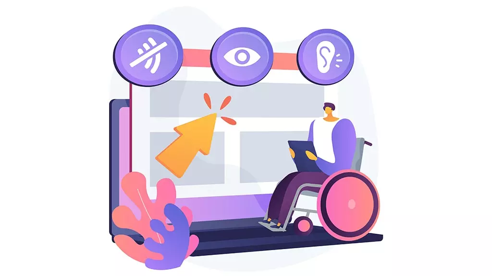

La accesibilidad web se refiere a la práctica de diseñar sitios web que sean utilizables por todas las personas, incluidas aquellas con discapacidades. Esto implica crear contenido que sea fácil de ver, escuchar y navegar, independientemente de las habilidades o limitaciones del usuario.
La accesibilidad web es un aspecto fundamental del diseño inclusivo y debe ser considerada en todas las etapas del desarrollo web. Con una plataforma web accesible, las personas pueden:
- Leer y comprender el contenido.
- Navegar por el sitio web de manera eficiente.
- Interactuar con formularios y otros elementos interactivos.
- Acceder a multimedia, como videos y audios, con subtítulos o descripciones.
- Contribuir con contenido, como comentarios o reseñas dentro del mundo digital.
La Accesibilidad web abarca todas las discapacidades que afectan al acceso a la Web, incluyendo:
- Discapacidades visuales (como ceguera, baja visión y daltonismo).
- Discapacidades auditivas (como sordera y dificultades auditivas).
- Discapacidades motoras (como dificultades para usar un ratón o teclado).
- Discapacidades cognitivas (como dificultades de aprendizaje y problemas de memoria).
- Discapacidades físicas (como lesiones o condiciones que afectan la movilidad).
Importancia de la accesibilidad web
La accesibilidad web busca que cualquier persona pueda usar un sitio, incluidas personas con discapacidades visuales, auditivas, motoras o cognitivas. También ayuda a usuarios en móviles, con conexiones lentas o en situaciones temporales (luz del sol, mano ocupada, etc.).
Razones éticas
- Respeta la dignidad y los derechos de todas las personas.
- Promueve la inclusión y la igualdad de oportunidades.
- Evita la discriminación por barreras innecesarias.
Razones legales
- Muchas leyes exigen sitios accesibles (especialmente en el sector público).
- Reduce riesgos de quejas, sanciones y pérdida de confianza.
Beneficios técnicos y de calidad
- Código más claro: uso correcto de títulos, listas y texto alternativo.
- Mejor mantenimiento: estructura entendible para cualquier desarrollador.
- Mejor experiencia de usuario: navegación fácil con teclado y mensajes claros.
- Mejor SEO y rendimiento: contenido semántico y recursos mejor descritos.
Buenas prácticas básicas
- Usa títulos en orden (
h1, luegoh2, etc.). - Escribe textos breves y claros (evita jerga y párrafos muy largos).
- Asegura buen contraste entre texto y fondo.
- Todos los elementos “clicables” deben poder usarse con teclado.
- Toda imagen debe tener un
altadecuado (ver ejemplos abajo).
La accesibilidad es ética y legalmente necesaria, y además mejora la calidad del código y la usabilidad para todas las personas. Cuando se desarrolla un sitio accesible, el código se organiza mejor porque se usan etiquetas semánticas que indican claramente el propósito de cada parte de la página. Esto facilita el mantenimiento, la lectura y la comprensión del código por parte de otros desarrolladores. También se evitan errores comunes y se mejora la compatibilidad con diferentes navegadores y dispositivos.
En cuanto a la usabilidad, un sitio accesible ofrece una experiencia más clara y cómoda. Las personas pueden navegar fácilmente con el teclado, los textos son legibles, los colores tienen buen contraste y las imágenes incluyen descripciones adecuadas. Todo esto no solo ayuda a quienes tienen alguna discapacidad, sino también a cualquier usuario que desee acceder al contenido desde su teléfono, una conexión lenta o un entorno con poca luz. En otras palabras, hacer un sitio accesible significa hacerlo mejor para todos.
Ejemplos de accesibilidad web en imágenes
-
Imagen decorativa:
Si la imagen es puramente decorativa y no aporta información relevante, el atributo
altdebe estar vacío.<img src="decorativa.jpg" alt=""> -
Imagen informativa:
Si la imagen contiene información importante, el atributo
altdebe describir esa información de manera concisa.<img src="grafico-ventas.jpg" alt="Gráfico de ventas mostrando un aumento del 20% en el último trimestre"> -
Imagen compleja:
Si la imagen es compleja (como un diagrama o una infografía), el atributo
altdebe proporcionar una descripción breve, y se puede incluir una descripción más detallada en el texto circundante o mediante un enlace a una descripción completa.<img src="diagrama-proceso.jpg" alt="Diagrama del proceso de selección de personal. Ver descripción detallada abajo.">"Proceso de selección de personal paso a paso desde que el postulado envía su CV hasta que se le notifica la decisión final."
Beneficios de la accesibilidad web
Implementar prácticas de accesibilidad web ofrece múltiples beneficios, como:
-
Mayor alcance
Al hacer que un sitio sea accesible, se puede llegar a un público más amplio, incluidas personas con discapacidades.
-
Mejora de la experiencia del usuario
Un diseño accesible a menudo resulta en una mejor experiencia para todos los usuarios, no solo para aquellos con discapacidades.
-
Cumplimiento legal
En muchos países, existen leyes que exigen que los sitios web sean accesibles. Cumplir con estas leyes puede evitar problemas legales.
Principios de las Pautas de Accesibilidad para el Contenido Web (WCAG)
Las WCAG se basan en cuatro principios fundamentales, conocidos por el acrónimo POUR en inglés (Perceptible, Operable, Understandable y Robust):
-
Perceptible
La información debe ser perceptible para las personas que utilizan solo uno de sus sentidos. Esto incluye proporcionar texto alternativo para imágenes, subtítulos para videos y asegurar un buen contraste de colores.

Ejemplo de código (imagen con texto alternativo):
<img src="grafico-ventas.png" alt="Gráfico que muestra aumento de ventas en 2025">Ejemplo de código (video con subtítulos):
<video controls width="600"> <source src="demo.mp4" type="video/mp4"> <track kind="captions" src="demo-es.vtt" srclang="es" label="Español"> Tu navegador no soporta el video. </video> -
Operable
La interfaz y la navegación deben ser operables. Los elementos interactivos deben poder usarse con teclado y el foco debe ser claro. Evita convertir elementos no interactivos en “botones”.

Ejemplo de código (enlace para saltar al contenido):
<a href="#contenido">Saltar al contenido</a> <!--navegación--> <main id="contenido"> <h2>Título de la sección</h2> <p>Contenido principal...</p> </main>Ejemplo de código (usar controles nativos y foco):
<button type="button">Abrir menú</button> <a href="contacto.html">Ir a contacto</a>Usar elementos nativos como
<button>y<a>garantiza soporte de teclado y foco sin hacks. -
Comprensible
La información y el funcionamiento de la interfaz deben ser fáciles de entender. Usa lenguaje claro, instrucciones cercanas al control y mensajes de error útiles.
Ejemplo de código (formulario con etiquetas e instrucciones):
<form action="/suscribir" method="post"> <p>Ingresa tu correo para recibir novedades.</p> <label for="email">Correo electrónico</label> <input id="email" name="email" type="email" required> <p id="ayuda">Usa un correo válido (ej.: nombre@dominio.com).</p> <button type="submit">Suscribirme</button> </form>El par
<label for>yidrelaciona claramente la etiqueta con el campo. El texto de ayuda cercano mejora la comprensión. -
Robusto
El contenido debe funcionar con diferentes navegadores, dispositivos y tecnologías de asistencia, hoy y en el futuro. La clave es usar HTML estándar y una jerarquía correcta.
Ejemplo de código (estructura semántica simple y estable):
<header> <h1>Mi sitio accesible</h1> </header> <nav> <a href="#articulo-1">Artículo 1</a> <a href="#articulo-2">Artículo 2</a> </nav> <main> <article id="articulo-1"> <h2>Título de sección</h2> <p>Contenido bien estructurado.</p> </article> </main> <footer> <p>© 2025</p> </footer>Mantener el orden de encabezados (
h1→h2) y usar elementos estándar mejora la compatibilidad con lectores de pantalla y agentes de usuario.